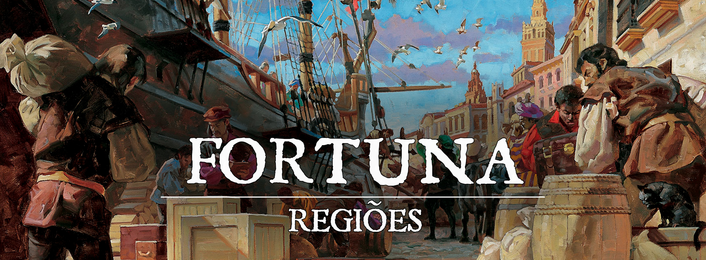

Migaglia
"Curtido por suor e maresia"
Descrição
Migaglia é a periferia de Fortuna que abriga aqueles que não tiveram sucesso na metrópole e os que preferem um trabalho mais árduo nas madeireiras, minas e estaleiros. Longe da opulência e ambição do outro lado da Baía Ventura, a cidade no entanto é o polo da criminalidade da região, sediando facções, gangues, e um pujante mercado negro sustentado pelo contrabando. Mas não se engane, a influência da elite de Fortuna é tão forte em Migaglia quanto na cidade principal.
Descrição Visual:
Migaglia.jpg|Migaglia
{kind=link}
A cidade quando vista da Baía, é um mar de casas de madeira com alguns edifícios construídos de forma diferente. As construções mais recentes são de melhor qualidade e mais altas, geralmente sendo pintadas de alguma cor que chame a atenção. Tais construções foram erguidas no lugar dos prédios que foram incendiados durante a Noite do Expurgo. Por trás da cidade, é possível ver a densa floresta que serve de matéria prima para a construção na cidade e da gigantesca frota marinha da metrópole. Quem anda pelas ruas de Migaglia pode achar que está andando em um labirinto de cortiços e pequenas casas de madeira amontoadas. Sempre é possível ver navios arrastando a melhor madeira extraída para ser levada para o porto de Fortuna, no outro lado da baía. Durante as manhãs e o fim da tarde, a maresia cobre a cidade com uma densa névoa, que ajuda os cidadãos mal intencionados a agir com furtividade.
Sociedade
População:
Todas as raças podem ser encontradas em Migaglia, mas tieflings e meio-elfos tendem a serem vistos com mais frequência que outras cidades de Gronnemar.
Cultura:
O povo de Migaglia tem duas características que destoam da capital; primeiro, os operários das madeireiras, estaleiros e manufaturas tem um senso de comunidade muito forte, geralmente antagonizando, por meio de demandas, os seu empregadores da metrópole e segundo, a vida na ilegalidade não é desestimulada, pelo contrário é encorajada por ser sinônimo de status na cidade: é a única maneira de acessar o luxo.
Caráter:
O povo de Migaglia é desconfiado e esperto, a convivência com o crime os fez muito alertas contra qualquer tipo de ameaça. O povo também vive buscando oportunidade de conseguir alguns trocados a mais, principalmente se eles saírem do bolso de algum forasteiro.
Datas e Festividades:
O Carnaval de Fortuna é celebrado com mais festança do que na capital, geralmente regado à muita bebida da mais baixa qualidade.
A Noite do Expurgo é lembrada durante o verão, nesta data flores são depositadas nas ruas dos edifícios que queimaram durante a operação da Mammonita.
Religião:
Não existe fé organizada em Migaglia, mas Illucidus é muito cultuado, assim como Vesunna.
Economia
A economia “legal” de Migaglia se baseia em ser o braço operário e extrativista de Fortuna, principalmente na extração de madeira para a construção de navios e casas, manufatura de bens simples para o uso diário na metrópole e nos estaleiros para embarcações de menor porte. O estaleiro construído para a fabricação da capitânia da frota de Fortuna foi abandonado, virando sede de uma poderosa facção criminosa.
A economia “ilegal” de Migaglia é a mais lucrativa, baseada em contrabando, roubos, extravios de material, obras de arte, literalmente tudo que o crime pode oferecer e que a moeda não pode pagar dentro da lei. Três facções criminosas são consideradas as principais forças do crime na cidade: O Cartel Dourado, a Confraria das Adagas e as Sombras do Cais.
Serviços:
Em Migaglia, jogadores podem encontrar bens, materiais e informação que não é possível obter de forma legítima, além de mercenários prontos para derramar sangue.
Governo
A estrutura de governo de Migaglia gira em torno do Interventor e Vice-Interventor apontados pelo Doge de Fortuna. Ambos só respondem ao conselho de Fortuna, atuando como uma autarquia. Atualmente o interventor é Antonin Verona e o vice Baldwin Fieri.
Três líderes sindicais são apontados apresentar as demandas do povo diretamente para os interventores.
Poderio Militar:
Migaglia não possui exército, apenas uma guarda mal equipada para enfrentar as ameaças das gangues locais e proteger os interventores.
Conflito
Recentemente as facções criminosas tem se profissionalizado, deixando de cometer pequenos delitos ou crimes muito violentos, passando a atuar de forma organizada para não chamar a atenção das autoridades e possibilitar sua longevidade.
Organizações Relevantes
Cartel Dourado
Chamado simplesmente de Cartel. A facção é especializada no comércio ilegal de substâncias ilícitas, geralmente poções mágicas com efeitos fortíssimos e que geram vício, assim como substâncias recreativas e estimulantes de performance muito empregados por capangas prestes a cometer crimes. Seu líder é Gerard Stern.
Confraria das Adagas
Chamada simplesmente de Confraria, é uma guilda de elegantes assassinos à serviço do maior pagador. Seus membros se vestem tão bem quanto a elite de Fortuna e fazem questão de transformar a cena de seus crimes em obras de arte sanguinárias. Seu líder é conhecida apenas como a Flor Escarlate
Sombras do Cais
Mais usualmente chamados de Sombras, a organização é considerada a mais furtiva da cidade. Quase nenhum membro tem seu rosto conhecido e dizem que só saem nas ruas de noite. Ocupando o antigo estaleiro abandonado, organizam de lá uma grande rede de contrabando. Para contratar as sombras, é necessário que deixe sua mercadoria ou carta de encomenda na porta do Estaleiro junto da quantidade de moedas adequada, num piscar de olhos o que for deixado lá será levado sem deixar rastro. O prazo é sempre o mesmo para qualquer tipo de serviço, em 8 dias as Sombras cumprem qualquer demanda. O líder da guilda é desconhecido. Sabe-se apenas seu apelido: Mão Invisível
Locais Relevantes
Grande Estaleiro de Migaglia
Uma vez considerado o símbolo da redenção da cidade, o estaleiro agora está abandonado pelas autoridades e serve como uma base para as Sombras do Cais. A estrutura destoa do panorama da cidade por ser grandiosa.
Bastião das Marés
Uma fortaleza feita para proteger o lado oeste da Baía contra possíveis invasores. Feita quase toda de blocos de pedra cobertos com uma argamassa branca, hoje em dia o bastião exala decaimento. Pouca atenção se dá para a estética do bastião, mas uma coisa é certa, os guardas ali estacionados são tão capazes quanto os do outro lado da baía.
Foi construído um puxadinho no Bastião para ser a base do Interventor da cidade e de lá ele trabalha, recebendo os líderes sindicais e escrevendo extensos relatórios sobre a situação da criminalidade da cidade.
NPCs Relevantes
Antonin Verona
O atual Interventor, Antonin, é um fracassado burocrata humano de meia idade que perdeu sucessivamente as eleições que concorreu. Recebeu uma chance de se redimir pela matriarca de sua família, que apenas cobra dele que a criminalidade de Migaglia não aumente.
Baldwin Fieri
O atual vice, Baldwin é um jovem meio-elfo prodígio na execução da lei. Baldwin é um excelente duelista, característica que foi essencial para o sucesso de uma operação para desmontar uma famosa guilda de ladrões em Fortuna. Baldwin, além de talentoso, é ambicioso e isso pode trazer problemas enquanto está alocado em Migaglia, tanto pelos perigos que as facções representam quanto pela disputa de protagonismo com seu superior, Antonin.
Gerard Stern
Gerard Stern era um lenhador nos bosques do oeste, sempre tendo um porte muito grande. Certa vez cortou uma grande árvore cuja casca soltava uma serragem dourada muito peculiar. Ele acidentalmente descobriu a matéria prima para uma das poções mais demandadas no mercado negro. Sua família estava passando por maus bocados, então resolveu explorar a extração da casca de tal espécie de árvore para dar a ela uma vida melhor. Gerar acabou fundando o Cartel Dourado para organizar as operações e se tornou um dos mais temidos senhores do crime de Migaglia.
Flor Escarlate
A Flor Escarlate é uma figura atípica, é a única mulher da Confraria e a mais mortal de seus membros. Ela costuma observar atentamente qualquer pessoa que requisite uma reunião com ela, como se estivesse procurando um ponto vital que daria a ela a tinta perfeita para pintar a cena de seu crime. Suas armas preferidas são sua fiel rapeira e um par de adagas voadoras. Quase sempre é vista vestindo um corselete preto por cima de uma vestido em vermelho vibrante, além de uma máscara de carnaval sempre combinando com sua roupa. A origem da elfa é um mistério.
Marlony [Coronel Manteiguinha]
Marlony é um criminoso em ascenção fazendo de tudo para crescer em Migaglia, as ações criminosas de Marlony e seu bando consistem em abordar viajantes nas estradas próximas da cidade e cobrar um pedágio de 30% de tudo que os viajantes estiverem carregando, caso alguém escolha não pagar o grupo criminoso tem atacado e tentam roubar os pertences dos viajantes.
756bdb4214cb064754cc037ce1176298.jpg | Marlony
{kind=link}
Origem
Migaglia foi sempre um lugar secundário para os cidadãos de Fortuna, servindo somente para ser o lugar de extração da madeira utilizada em seus grandes navios mercantis e prédios. Posteriormente foi descoberto na região uma mina de ferro, o que contribuiu para o seu crescimento.
Aos poucos a vila de Migaglia foi crescendo e recebendo pessoas que não tiveram sorte na cidade grande. Mesmo assim, a atividade da vila é sempre voltada para suprir a demanda da Metrópole. Até alguns estaleiros foram erguidos para a fabricação de embarcações de menor porte encomendadas por Fortuna. Passou a ser costume da elite burocrática de Fortuna enviar desafetos para que sejam parte da administração da vila, como forma de punição.
O problema, ou vantagem, daquele lugar era que as forças legais não atuavam de maneira tão eficiente quanto na capital, tanto por negligência quanto por interesse. Ainda que Fortuna fosse lar de muitos negócios de licitude questionável, em Migaglia a ilicitude se tornou regra. Com a conivência da elite de Fortuna, a cidade se tornou polo para o contrabando, mercado negro e crime de uma maneira geral. Várias gangues e facções que atuavam nas sombras de Fortuna realocaram sua sede para Migaglia, de onde poderiam comandar sem o risco de um confronto com a guarda da metrópole.
Não tardou para que os oligarcas enxergassem ali uma oportunidade. O mercado negro era algo muito lucrativo. Algumas famílias de Fortuna enviaram pessoas de confiança para que fossem a ponte entre o crime e a alta sociedade. O comércio ilegal, com o tempo, se tornou apenas uma forma de diversificação do portfólio das famílias, e, diferente das outras atividades, era sempre perene e ainda mais lucrativa em tempos de crise.
Certa vez o Doge de Fortuna, na época Helmut Scalia, o Patriarca dos Scalia, ordenou que uma grande operação fosse realizada para desmontar todo o crime de Migaglia. Foi empregada toda a força da Mammonita numa operação altamente destrutiva, que ficou conhecida como a Noite do Expurgo. Este evento foi um marco na cidade, gerando uma profunda mudança estrutural. As organizações criminosas se consolidaram, parando de atuar em crimes pequenos que chamam atenção desnecessária e os trabalhadores da cidade passaram a se organizar em sindicatos.